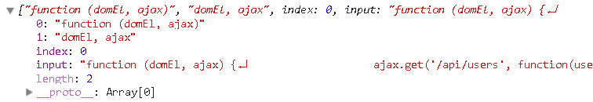

推荐语：
今天推荐一篇华为同事的同事翻译的一篇文章，推荐的主要原因是作为一个华为员工居然晚上还能写文章，由不得小钗不佩服！！！
其中的jQuery、angular、react皆是十分优秀的框架，各有特点，各位可以看看
编辑:github 原文链接：Revealing the Magic of JavaScript
我们每天都在使用大量的工具，不同的库和框架已经成为我们日常工作的一部分。我们使用他们是因为我们不想重新造轮子，虽然我们可能并不知道这些框架的原理。在这篇文章中，我们将揭开当前流行框架中那些魔法处理机制。
通过字符串来创建DOM节点
随着单页应用的兴起，我们已经可以使用JS来做越来越多的事情了，业务的大部分逻辑都将移到前台。我们以下面创建页面元素为例：
var text = $('<div>Simple text</div>'); $('body').append(text);
运行结果是：在当前页面中新增了一个div元素。使用jquery，这个只需要一行代码就搞定了，如果不用jquery，可能会多几行代码：
var stringToDom = function(str) { var temp = document.createElement('div'); temp.innerHTML = str; return temp.childNodes[0]; } var text = stringToDom('<div>Simple text</div>'); document.querySelector('body').appendChild(text);
我们定义了一个自己的工具方法stringToDom，这个方法做了如下事情：首先创建一个临时div元素，然后设定它的innerTHML属性，然后返回该DIV元素的第一个节点。同样的写法，下面的代码会获得不同的结果：
var tableRow = $('<tr><td>Simple text</td></tr>'); $('body').append(tableRow); var tableRow = stringToDom('<tr><td>Simple text</td></tr>'); document.querySelector('body').appendChild(tableRow);
从这个页面的表面上看，没有什么不同。但是我们通过chrome的开发工具查看生成的HTML标记的话，会得到一个有趣的结果，创建了一个文本元素。
貌似我们的stringToDom 只创建了一个文本节点而不是tr标签。但是jquery却不知何故可以正常运行。问题的原因是在浏览器端是通过解析器来解析含有HTML元素的字符串的。解析器会忽略掉那些放错上下文位置的标记，因此我们只获得了文本节点。row标签没有包含在正确的table标签中，这对浏览器的解析器来说就是不合法的。
jquery通过创建正确的上下文后然后做些转换，可以成功的解决这个问题。如果我们深入到源码中可以看到下面的一个映射：
var wrapMap = { option: [1, '<select multiple="multiple">', '</select>'], legend: [1, '<fieldset>', '</fieldset>'], area: [1, '<map>', '</map>'], param: [1, '<object>', '</object>'], thead: [1, '<table>', '</table>'], tr: [2, '<table><tbody>', '</tbody></table>'], col: [2, '<table><tbody></tbody><colgroup>', '</colgroup></table>'], td: [3, '<table><tbody><tr>', '</tr></tbody></table>'], _default: [1, '<div>', '</div>'] }; wrapMap.optgroup = wrapMap.option; wrapMap.tbody = wrapMap.tfoot = wrapMap.colgroup = wrapMap.caption = wrapMap.thead; wrapMap.th = wrapMap.td;
任何一个需要特殊处理的元素都对应到一个数组中，目的就是为了构建一个正确的DOM节点。例如，对于tr元素，我们要创建一个带有tbody的table中，需要包裹两层。
虽然有了map，但是我们还是得先去查找到字符串中的结束标签是啥。下面的代码可以从<tr><td>Simple text</td></tr>抽取出tr标签。
var match = /<\s*\w.*?>/g.exec(str); var tag = match[0].replace(/</g, '').replace(/>/g, '');
剩下来要做的就是找到属性上下文，然后返回DOM元素。下面是stringToDom方法的最终版本：
var stringToDom = function(str) { var wrapMap = { option: [1, '<select multiple="multiple">', '</select>'], legend: [1, '<fieldset>', '</fieldset>'], area: [1, '<map>', '</map>'], param: [1, '<object>', '</object>'], thead: [1, '<table>', '</table>'], tr: [2, '<table><tbody>', '</tbody></table>'], col: [2, '<table><tbody></tbody><colgroup>', '</colgroup></table>'], td: [3, '<table><tbody><tr>', '</tr></tbody></table>'], _default: [1, '<div>', '</div>'] }; wrapMap.optgroup = wrapMap.option; wrapMap.tbody = wrapMap.tfoot = wrapMap.colgroup = wrapMap.caption = wrapMap.thead; wrapMap.th = wrapMap.td; var element = document.createElement('div'); var match = /<\s*\w.*?>/g.exec(str); if(match != null) { var tag = match[0].replace(/</g, '').replace(/>/g, ''); var map = wrapMap[tag] || wrapMap._default, element; str = map[1] + str + map[2]; element.innerHTML = str; // Descend through wrappers to the right content var j = map[0]+1; while(j--) { element = element.lastChild; } } else { // if only text is passed element.innerHTML = str; element = element.lastChild; } return element; }
注意下，我们有个判断 match != null条件用于判断string中是否有tag标签，如果没有我们只是简单的返回文本节点。这里我们传入了正确的标签，所以浏览器能够创建一个正常的DOM节点了。在代码的最后部分可以看到，通过使用一个while循环，我们一直深入到我们想要的那个tag节点后返回给了调用者。
下面让我们窥探下AngularJS中经常的依赖注入。
揭秘AngularJS中的依赖注入
当我们第一次使用AngularJS的时候，我们肯定对它的双向数据绑定留下了深刻的影响，那第二个值得关注的就是它那魔法般的依赖注入。下面看下简单的例子：
function TodoCtrl($scope, $http) { $http.get('users/users.json').success(function(data) { $scope.users = data; }); }
这是非常经典的AngularJS控制器。它通过一个http请求来获取一个json文件中的数据，然后放把数据放到当前的scope中。我们不只是TodoCtrl 方法-我们也没有任何机会去传递参数。但是框架做到了。那$scope和$http变量时从哪里来的呢？这真实一个超级酷的特性，简直就是一个神奇的魔法。让我们来看下它的工作原理。
假如我们系统中需要一个展示用户列表的JS函数。我们需要一个可以把生成的HTML设置到DOM节点的方法，一个封装了获得数据的Ajax请求的对象。为了简化例子，我们mock了数据和http请求。
var dataMockup = ['John', 'Steve', 'David']; var body = document.querySelector('body'); var ajaxWrapper = { get: function(path, cb) { console.log(path + ' requested'); cb(dataMockup); } }
我们将使用body标签来承载内容。ajaxWrapper是一个触发请求的对象，dataMockup 是包含数据的数组。看下我们怎么使用它：
var displayUsers = function(domEl, ajax) { ajax.get('/api/users', function(users) { var html = ''; for(var i=0; i < users.length; i++) { html += '<p>' + users[i] + '</p>'; } domEl.innerHTML = html; }); }
当然，如果我们运行displayUsers(body, ajaxWrapper)我们应该可以看到3个名字展示在页面上，同时在控制台上应该会输出/api/users这个log。我们可以说我们的方法依赖两个东东：body和ajaxWrapper。但是现在我们的目标是在不传递参数的情况下也能正常工作，我们希望的只通过调用displayUsers()也能得到相同的结果。如果我们直接使用如上的方法进行调用，会看到如下结果：
Uncaught TypeError: Cannot read property ‘get’ of undefined
这是因为ajax参数没有被定义。
大多数提供依赖注入机制的框架都会有一个injector。如果使用了那个依赖，那我们需要在injector中注册下。
让我们来创建我们自己的injector：
var injector = { storage: {}, register: function(name, resource) { this.storage[name] = resource; }, resolve: function(target) { } };
我们只需要两个方法。第一个就是register，他接收依赖然后存储起来。第二个方法resolve接收一个有依赖模块的函数target作为参数。这里的一个关键点是我们要控制好不能让注入器调用我们的方法。resolve方法中返回了一个包含target()的闭包。看下代码：
resolve: function(target) { return function() { target(); }; }
这样我们就有可以在不改变应用流程的情况下去访问函数了。injector当前还是一个独立的而且不包含任何逻辑的方法。
当然，把displayUsers 传递给resove函数还是不行
displayUsers = injector.resolve(displayUsers);
displayUsers();
还是报错。下一步就是找出target参数到底需要什么，是否都是它的依赖？这里我们可以参考下AngularJS。同样我自己深入看了下源码找到了下面这段代码：
var FN_ARGS = /^function\s*[^\(]*\(\s*([^\)]*)\)/m; var STRIP_COMMENTS = /((\/\/.*$)|(\/\*[\s\S]*?\*\/))/mg; ... function annotate(fn) { ... fnText = fn.toString().replace(STRIP_COMMENTS, ''); argDecl = fnText.match(FN_ARGS); ... }
我们忽略掉一些细节代码，只看我们需要的。annotate方法和我们的resolve方法很像。它转换传递过去的target为字符串，删除掉注释代码，然后抽取其中的参数。让我们看下它的执行结果：
resolve: function(target) { var FN_ARGS = /^function\s*[^\(]*\(\s*([^\)]*)\)/m; var STRIP_COMMENTS = /((\/\/.*$)|(\/\*[\s\S]*?\*\/))/mg; fnText = target.toString().replace(STRIP_COMMENTS, ''); argDecl = fnText.match(FN_ARGS); console.log(argDecl); return function() { target(); } }
下面是输出结果

如果我们去查看第二个元素argDecl数组的话，我们会看到它所需要依赖对象。这正是我们需要的，因为通过名字我们就能从storage中查到依赖的资源了。下面的这个版本能够完成我们的目标：
resolve: function(target) { var FN_ARGS = /^function\s*[^\(]*\(\s*([^\)]*)\)/m; var STRIP_COMMENTS = /((\/\/.*$)|(\/\*[\s\S]*?\*\/))/mg; fnText = target.toString().replace(STRIP_COMMENTS, ''); argDecl = fnText.match(FN_ARGS)[1].split(/, ?/g); var args = []; for(var i=0; i<argDecl.length; i++) { if(this.storage[argDecl[i]]) { args.push(this.storage[argDecl[i]]); } } return function() { target.apply({}, args); } }
注意我们使用了.split(/, ?/g)把字符串domEl、ajax转换成了数组。接下来我们来校验依赖是否注册了，如果注册的话我们把它传递给target函数作为参数。注入器的代码应该是这样的：
injector.register('domEl', body);
injector.register('ajax', ajaxWrapper);
displayUsers = injector.resolve(displayUsers);
displayUsers();
这样实现的好处是我们能够可以吧DOM和ajaxWrapper注入到更多的方法中。这不需要把一个对象从一个类传递到另一个类，它只有register和resolve方法。
当然我们的injector还不够完美，还有提升的空间，比如支持scope定义。target函数当前是一旦被调用时候就会创建一个新的scope，但是通常我们希望可以传递我们自己的scope。我们还可以让依赖支持用户自定义的参数。
如果想我们的代码在最小化之后也能正常工作的话，那injector会变的更加复杂。我们知道，最小化工具会替换函数、变量甚至方法参数的名字。而我们的逻辑都是依赖这些名字的，所以我们应该考虑下。我们从AngularJS中找到了一个解决方案：
displayUsers = injector.resolve(['domEl', 'ajax', displayUsers]);
我们不只传递displayUsers，我们还传递依赖对象的名字。
使用Ember的计算属性
Ember是当前最流行框架之一。它有很多有用的特性。其中计算属性非常有趣。计算属性就是用一个函数来充当属性。让我们来看下Ember文档中的一个简单例子：
App.Person = Ember.Object.extend({ firstName: null, lastName: null, fullName: function() { return this.get('firstName') + ' ' + this.get('lastName'); }.property('firstName', 'lastName') }); var ironMan = App.Person.create({ firstName: "Tony", lastName: "Stark" }); ironMan.get('fullName') // "Tony Stark"
这里有一个类定义了firstName和lastName属性。计算属性fullName返回一个组装后的人的全名字符串。这里比较陌生的的地方是我们使用.property方法跟着函数后面赋值给fullName。我个人从没有在哪里看到过这种写法。同样，我从源码中找到了答案：
Function.prototype.property = function() { var ret = Ember.computed(this); // ComputedProperty.prototype.property expands properties; no need for us to // do so here. return ret.property.apply(ret, arguments); };
这里我们看到它在Function的原型对象中增加了一个新的属性property。这对于定义一个类来说，是一个非常好的运行逻辑的途径。
Ember使用get、set来操作对象属性。这简化了计算属性的实现，因为在我们操作中间忽略掉了一个封装层。但是更加有趣的是我们是否可以在JS原生对象上使用计算属性呢。看下面的例子：
var User = { firstName: 'Tony', lastName: 'Stark', name: function() { // getter + setter } }; console.log(User.name); // Tony Stark User.name = 'John Doe'; console.log(User.firstName); // John console.log(User.lastName); // Doe
name是一个普通的对象属性，但是这里被赋予了一个方法，可以设定或者获取到firstName和lastName。
JS值有个内置的特性可以帮助我们实现我们的想法。接着看下面的代码：
var User = { firstName: 'Tony', lastName: 'Stark' }; Object.defineProperty(User, "name", { get: function() { return this.firstName + ' ' + this.lastName; }, set: function(value) { var parts = value.toString().split(/ /); this.firstName = parts[0]; this.lastName = parts[1] ? parts[1] : this.lastName; } });
Object.defineProperty方法接受一个上下文、属性名称以及get/set方法。我们要做的就是实现里面的两个方法，仅此而已。我们将运行上面的代码并且能够获得到期望的结果：
console.log(User.name); // Tony Stark User.name = 'John Doe'; console.log(User.firstName); // John console.log(User.lastName); // Doe
Object.defineProperty确实是我们需要的，但是我们不想强制每个开发者每次都重写这个方法。我们需要提供一个原生支持的逻辑代码，就类似于Ember的接口。我们只需要一个定义类的方法，在这里，我们会写一个使用函数Computize用来把对象中的函数中传递的名称转换成对象中属性的名称。
var Computize = function(obj) { return obj; } var User = Computize({ firstName: 'Tony', lastName: 'Stark', name: function() { ... } });
我们想使用set来设定名称，同时使用get来获取名称。这和Ember的计算属性非常类似。
现在就让我们增加我们的逻辑代码到函数的原型中吧：
Function.prototype.computed = function() { return { computed: true, func: this }; };
一旦我们增加了上面的代码，我们就会为每个函数增加了一个.computed()方法了。
name: function() { ... }.computed()
结果就是name属性不在是函数了，而是一个拥有computed为true的属性和一个func属性的对象。真正的魔法发生在自定义辅助方法的实现上，它贯穿于整个对象的属性上。我们会在计算属性上使用Object.defineProperty：
var Computize = function(obj) { for(var prop in obj) { if(typeof obj[prop] == 'object' && obj[prop].computed === true) { var func = obj[prop].func; delete obj[prop]; Object.defineProperty(obj, prop, { get: func, set: func }); } } return obj; }
注意我们删除了原生的属性名称。在一些浏览器中Object.defineProperty只运行于还没有存在的属性上。
下面是一个使用.computed()方法最终版本的User对象。
var User = Computize({ firstName: 'Tony', lastName: 'Stark', name: function() { if(arguments.length > 0) { var parts = arguments[0].toString().split(/ /); this.firstName = parts[0]; this.lastName = parts[1] ? parts[1] : this.lastName; } return this.firstName + ' ' + this.lastName; }.computed() });
在这个返回全名的函数中可以观察到firstName和lastName的变化。在这里判断是否判断了参数，如果传了参数则把他们分设到firstName和lastName中。
我们已经提过期望的接口，但是我们再来看下：
console.log(User.name); // Tony Stark User.name = 'John Doe'; console.log(User.firstName); // John console.log(User.lastName); // Doe console.log(User.name); // John Doe
下面是CodePen中运行的结果：
疯狂的React模板
你可能听说过Facebook的框架React。它的构建思想就是一切都是组件。其中感兴趣的就是关于组件的定义。让我们看下如下例子：
<script type="text/jsx">; /** @jsx React.DOM */ var HelloMessage = React.createClass({ render: function() { return <div>Hello {this.props.name}</div>; } }); </script>;
我看看到这段代码的时候我们会想到这是JS，但是不是合法的，这里的render方法可能会报错。但是这里的手段是这段代码放在了script标签中，同时赋值给了定义的变量中。浏览器不会处理它意味着我们的代码是安全的。React有它自己的解析器，会把定义好的代码转换成合法的JS代码。Facebook的开发者称这种解析器为JSX。JSX解析器大约390k、12000行代码。因此它还是比较复杂的。在本节中，我们将创建一个非常简单，但是功能强大的东东：一个以React风格解析HTML模板的JS类。
Facebook采取的方式是混合使用JS代码和HTML标签。现在假如我们有如下的模板：
<script type="text/template" id="my-content">; <div class="content">; <h1>;<% title %>;</h1>; </div>; </script>;
增加一个组件：
var Component = { title: 'Awesome template', render: '#my-content' }
想法是我们指定template id，然后定义要被应用的数据。剩下的就是我们的实现了：连接两个元素的引擎。我们称之为Engine，它应该是这样的：
var Engine = function(comp) { var parse = function(tplHTML) { // ... magic } var tpl = document.querySelector(comp.render); if(tpl) { var html = parse(tpl.innerHTML); return stringToDom(html); } } var el = Engine(Component);
我们将获得script标签里面的内容，然后解析它后生成HTML字符串。在转换HTML为DOM元素之后，把它作为结果返回结束。注意我们用了stringToDom函数，我们在第一节中已经见过了。
现在让我们开始写parse函数。我们首要任务是从表达式中区分出HTML标记。表达式中我们要查找<%和%>之间的字符串。我们使用正则表达式去遍历查找他们：
var parse = function(tplHTML) { var re = /<%([^%>]+)?%>/g; while(match = re.exec(tplHTML)) { console.log(match); } }
上述代码的之行结果如下：
[ "<% title %>", "title", index: 55, input: "<div class="content"><h1><% title %></h1></div>" ]
这里只有一个表达式，里面的内容是title。比较直观的方法是我们使用JS的replace函数去替换<% title %>为comp 对象中的数据。但是，这种方式只能运行于简单的属性。如果有嵌套对象甚至要使用函数，比如下面的例子：
var Component = { data: { title: 'Awesome template', subtitle: function() { return 'Second title'; } }, render: '#my-content' }
我们不用复杂的解析器，也不用发明一种新的语言，我们只用原生JS。我们要用的就是只有new Function语法。
var fn = new Function('arg', 'console.log(arg + 1);'); fn(2); // outputs 3
我们能够通过它来创建函数体，而且可以在以后去运行。因此我们需要知道表达式的位置以及它前面的元素。那如果我们使用一个临时的数组和一个游标，那代码应该是这样的：
var parse = function(tplHTML) { var re = /<%([^%>]+)?%>/g; var code = [], cursor = 0; while(match = re.exec(tplHTML)) { code.push(tplHTML.slice(cursor, match.index)); code.push({code: match[1]}); // <-- expression cursor = match.index + match[0].length; } code.push(tplHTML.substr(cursor, tplHTML.length - cursor)); console.log(code); }
代码的输出结果如下：
[ "<div class="content"><h1>", { code: "title" }, "</h1></div>" ]
代码数据数组将会被转换成字符串来作为函数体。举例：
return "<div class=\"content\"><h1>" + title + "</h1></div>";
输出这个结果还是非常容易的。我们可以写一个循环来遍历代码数据的元素来判断它是字符串还是对象。但是这只能覆盖部分情况。如果我们有如下的模板该咋办呢：
// component var Component = { title: 'Awesome template', colors: ['read', 'green', 'blue'], render: '#my-content' } // template <script type="text/template" id="my-content"> <div class="content"> <h1><% title %></h1> <% while(c = colors.shift()) { %> <p><% c %></p> <% } %> </div> </script>
我们不能只是连接表达式就能获得颜色列表。因此，我们不用字符串连接字符串，我们要把它们手机起来放到数组中。下面是更新版本的parse函数：
var parse = function(tplHTML) { var re = /<%([^%>]+)?%>/g; var code = [], cursor = 0; while(match = re.exec(tplHTML)) { code.push(tplHTML.slice(cursor, match.index)); code.push({code: match[1]}); // <-- expression cursor = match.index + match[0].length; } code.push(tplHTML.substr(cursor, tplHTML.length - cursor)); var body = 'var r=[];\n'; while(line = code.shift()) { if(typeof line === 'string') { // escaping quotes line = line.replace(/"/g, '\\"'); // removing new lines line = line.replace(/[\r\t\n]/g, ''); body += 'r.push("' + line+ '");\n' } else { if(line.code.match(/(^( )?(if|for|else|switch|case|break|while|{|}))(.*)?/g)) { body += line.code + '\n'; } else { body += 'r.push(' + line.code + ');\n'; } } } body += 'return r.join("");'; console.log(body); }
一旦代码数组被填充玩我们就开始构建函数体了。模板的每行都会被存储到一个数组r中。如果这行是字符串，我们会引号进行转义并且去除掉换行符、回车符和tab符，然后增加到数组中。如果是代码，则需要校验是否是合法的JS操作符，如果是JS语法则不会添加到数组中。console.log会有如下输出：
var r=[]; r.push("<div class=\"content\"><h1>"); r.push(title); r.push("</h1>"); while(c = colors.shift()) { r.push("<p>"); r.push(c); r.push("</p>"); } r.push("</div>"); return r.join("");
非常好，不是么？这个JS的属性格式化工具，将会获得到我们想要的结果。
剩下要做的事情就是运行我们创建的函数：
body = 'with(component) {' + body + '}';
return new Function('component', body).apply(comp, [comp]);
我们通过使用with语句来把上下文设定为component，如果不适用它我们需要使用this.title和this.colors而不是title和colors。
总结
在一个大的框架和库函数背后都集中了非常睿智的开发者。他们找到的很多招数都非常的琐细的，甚至是神奇的。在这篇文章中，我们总结了这些魔法。在JS世界中，我们可以从它们并且使用他们的代码是非常棒的事情。
这篇文章的代码都可以从GitHub中下载到。